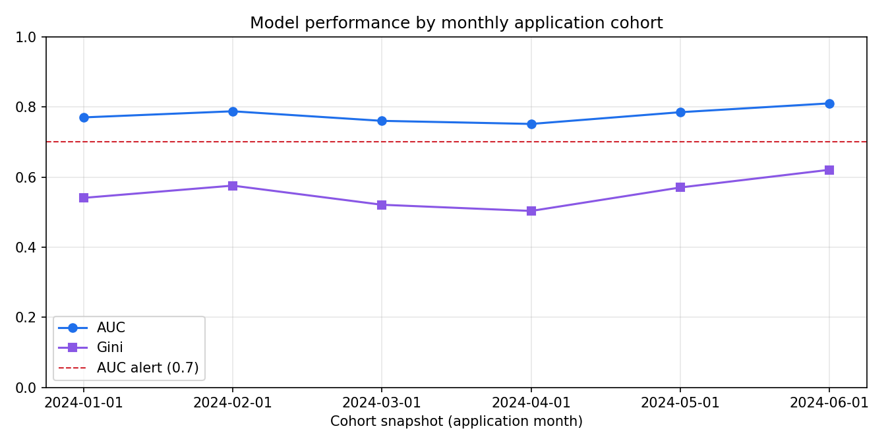
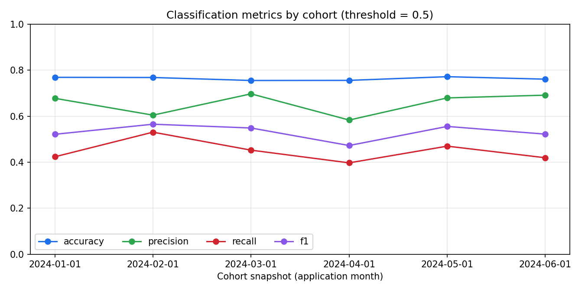
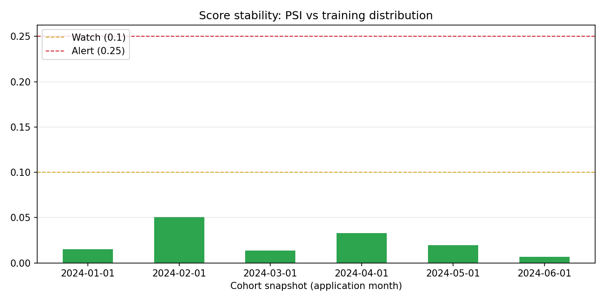
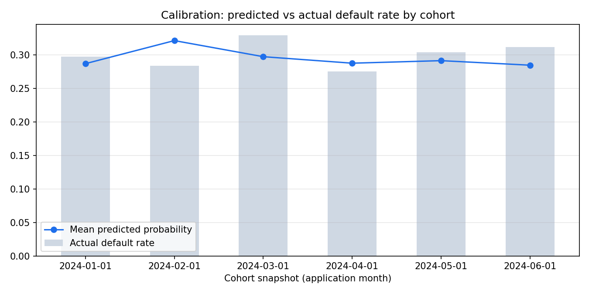

A fully automated, Airflow-orchestrated pipeline that trains and selects a credit-default model, scores every monthly cohort of loan applications, and monitors model performance and stability as labels mature — all running in Docker, end to end, on top of a medallion datamart.
Kevin Aldrin Tan • June 2026 • audience: engineering, data science & business stakeholders
The bank issues cash loans. Credit losses come from borrowers who stop paying. We need a default risk score at the point of application, so risky applications can be declined, repriced, or routed to manual review — before money goes out the door.
A loan is labelled bad if it is ever 30+ days past due at month-on-book 6 (30dpd_6mob). This is the label definition already used by the upstream datamart's label store; observed bad rate ≈ 29%.
We only learn whether a January application was good or bad 6 months later. The entire pipeline — training windows, monitoring cadence — is designed around this delay.
| Source | Contents | Grain |
|---|---|---|
| features_attributes | age, occupation (PII dropped in gold) | 1 row / applicant |
| features_financials | income, debt, credit history, payment behaviour | 1 row / applicant |
| feature_clickstream | 20 behavioural web features | monthly / customer |
| lms_loan_daily | loan book: installments, overdue amounts | monthly / loan |
Three classmate datamarts (simulating other tech families) were available alongside my own Assignment 1 pipeline. I adopted the LAM NGUYEN THANH THAO datamart end-to-end — bronze → silver → gold, code unchanged — and built the ML pipeline as its downstream consumer.
| DAG task (runs monthly, backfillable) | What it does | Active when |
|---|---|---|
| build_datamart | Full bronze→silver→gold rebuild (idempotent; skipped once built) | first run / missing |
| gate_training → train_and_select_model | Train 3 candidates, select by OOT AUC, register in model bank | Jan 2024 |
| gate_inference → run_inference | Score the month's cohort with the active model | Jan–Jun 2024 |
| gate_monitoring → run_model_monitoring | Evaluate cohort from 6 months ago; refresh charts | Jul–Dec 2024 |
Short-circuit gates make every monthly run cheap and self-describing: a single airflow dags backfill (or unpausing with catch-up) replays the entire model lifecycle deterministically.
A label for an application made in month m only exists at m+6. Training "as of Jan 2024" on Dec 2023 applications would silently use loan outcomes from Jun 2024 — temporal leakage that inflates offline metrics and collapses in production.
| Window | Cohorts | Used for |
|---|---|---|
| TRAIN | Jan–May 2023 (2,568 rows) | fit candidates (80/20 internal split) |
| OOT | Jun–Jul 2023 (988 rows) | model selection — untouched by fitting |
| SCORE | Jan–Jun 2024 (3,015 rows) | production inference |
| MONITOR | same cohorts, +6 months | actuals vs predictions |
Aug–Dec 2023 cohorts are deliberately unused for training: their labels had not matured by the Jan 2024 training date. Leaving them out is the cost of honesty — and the OOT AUC (0.80) matched production AUC (0.75–0.81), evidence the discipline paid off.
| Candidate | Train AUC | Test AUC | OOT AUC ▼ | Verdict |
|---|---|---|---|---|
| Logistic Regression (scaled, median-imputed) | 0.806 | 0.779 | 0.797 | SELECTED |
| HistGradientBoosting | 1.000 | 0.791 | 0.785 | overfits; small gain not robust OOT |
| Random Forest (300 trees) | 0.987 | 0.778 | 0.784 | overfits; weakest OOT |
Selection rule: max OOT AUC. The boosted trees win on the random test split but lose out-of-time — exactly the gap OOT validation exists to expose. With ~2.5k training rows and 72 features, the regularised linear model generalises best across months.
Artefacts are immutable, named credit_model_<deploy-date>. Inference resolves "the active model" as the latest version deployed on/before the scoring date — so re-running history always uses the model that was live at the time, and rollback is just re-pointing to a previous version.
| Column | Example |
|---|---|
| Customer_ID | CUS_0x66b3 |
| snapshot_date (partition) | 2024-03-01 |
| model_version | credit_model_2024-01-01 |
| default_probability | 0.34 |
| default_prediction (p ≥ 0.5) | 0 |
Hive-style partitions per month → cheap incremental writes, trivially queryable by Spark / pandas / BI tools. Idempotent: re-running a month overwrites that partition only.
| Group | Columns |
|---|---|
| Identity | cohort_snapshot_date, monitored_at, model_version, n_scored, n_labeled |
| Performance | auc, gini, accuracy, precision, recall, f1 |
| Calibration | predicted_default_rate, actual_default_rate |
| Stability | psi (scores vs training baseline) |
| Governance | status ∈ OK / WATCH / ALERT |
The monitoring task also regenerates the four trend charts (gold/monitoring_viz/) on every run, so dashboards and this deck always show the latest state.

AUC / Gini by application cohort. Production AUC stays in 0.75–0.81, bracketing the 0.80 OOT estimate from selection, and never approaches the 0.70 alert line. Mild month-to-month wobble is consistent with ~500-application cohort sizes.

Decision metrics at the 0.5 threshold. Accuracy ≈ 0.76–0.77 and precision ≈ 0.58–0.70; recall sits at 0.40–0.53 — the conservative threshold favours precision (fewer good customers wrongly declined). Threshold tuning against approval-rate and loss targets is the natural next business conversation.

Population Stability Index of each cohort's score distribution vs the training baseline (decile bins). All six months sit at 0.01–0.05, far below the 0.10 watch and 0.25 alert thresholds — the applicant population the model sees is the population it was trained on.

Calibration. Mean predicted probability (line) tracks the realised default rate (bars) within ~4pp every month — scores can be read as approximate probabilities, which matters for pricing and expected-loss provisioning, not just rank-ordering.
| Signal | OK | Watch | Alert |
|---|---|---|---|
| AUC (matured cohort) | ≥ 0.75 | 0.70–0.75 | < 0.70 |
| PSI (scores vs training) | < 0.10 | 0.10–0.25 | > 0.25 |
| Calibration gap | < 5pp | 5–10pp | > 10pp |
Status is written into the gold monitoring table by the pipeline itself — the audit trail is the data, not a wiki page.